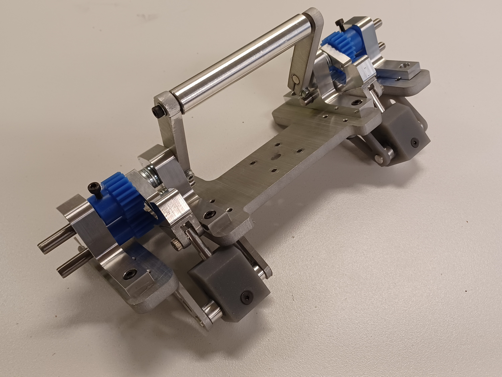
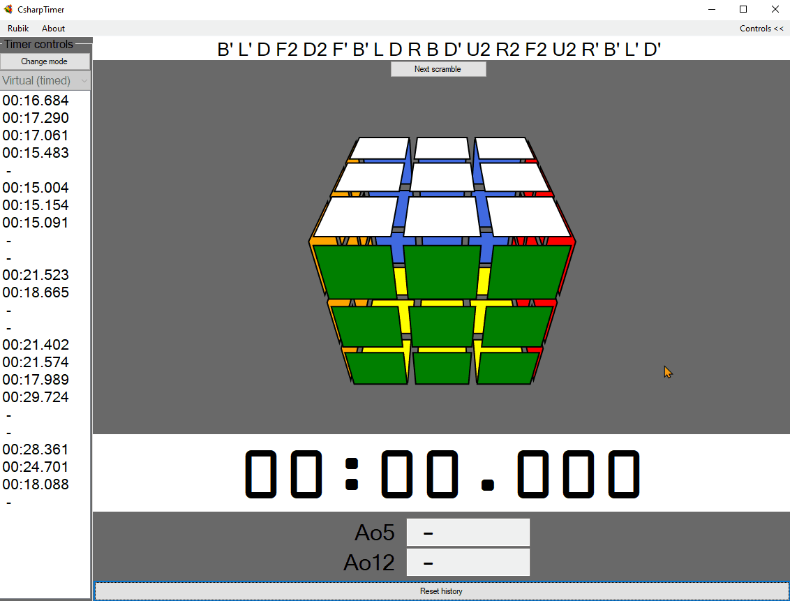

Macroscope

A constant-height, contact mode atomic force microscope/profilometer.
Capstone: OCM

A variable-diameter endoscope test fixture mount for Intuitive Surgical.
With Phoebe Cheung, Cameron Lee-Ming, and Adam Metwally.
SSOpad
A custom 18-key macropad using QMK firmware.
20x4 LCD version, which doubles as a binary-hex-decimal converter.
OLED version with rotary encoder, used to display current keymap.
Virtual cube

A simple 3x3 cube simulator built in C#.
Based on VirtualRubik
and adds the timer elements, nicer (IMO) rendering, parallel moves, reconstructions.